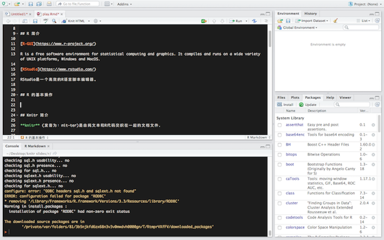

R is a free software environment for statistical computing and graphics. It compiles and runs on a wide variety of UNIX platforms, Windows and MacOS.
RStudio是一个高效的R语言脚本编辑器。

library(RMySQL)## Loading required package: DBIcon = dbConnect(MySQL(), user = "work", password = "123456", dbname = "data_bi",
host = "192.168.225.208")
myQuery <- "select * from app_fact_auth_pv_statistics;"
mydt <- dbGetQuery(con, myQuery)
head(mydt)## cityname auth_uvcnt auth_yykccnt auth_zxzxcnt auth_400cnt
## 1 上海 31390 25 26 0
## 2 北京 52319 30 45 0
## 3 沈阳 22887 20 28 47
## 4 上海 28778 23 46 0
## 5 北京 51125 29 45 0
## 6 沈阳 19333 19 38 35
## auth_dis_phonecnt auth_cvr dt type
## 1 25 0.00080 2016/8/2 d
## 2 30 0.00057 2016/8/2 d
## 3 66 0.00288 2016/8/2 d
## 4 23 0.00080 2016/8/3 d
## 5 29 0.00057 2016/8/3 d
## 6 53 0.00274 2016/8/3 dknitr (发音为：nit-ter)是由纯文本和R代码交织在一起的文档文件.
Knitr和RStudio集成是快速生成报告的最佳组合。简单地说，报告中有文字也有代码，Knitr就是通过markdown的语法在报告中该显示代码的地方显示代码，该显示运行结果（比如图表）的地方显示运行结果，这样整个报告文档就可以直接运行再次生成报告，而不需要把代码单独复制到控制台中执行，然后再把执行结果添加到文档中。
此包是由R大神谢益辉制作。谢益辉毕业于爱荷华大学统计学博士专业，现就职与Rstudio。
---
title: "Rstudio Knitr 包分享"
author: "Qi Zou"
date: "August 16, 2016"
output: ioslides_presentation
---Two plus two equals 4
library(RMySQL)
con = dbConnect(MySQL(), user = "work", password = "123456", dbname = "data_bi",
host = "192.168.225.208")
myQuery <- "select * from app_fact_auth_pv_statistics;"
mydt <- dbGetQuery(con, myQuery)报告有两种生成方式
当你生成报告时，R会
HTML 插件是以浏览器为依托的可交互控件，可使用的HTML插件库如下